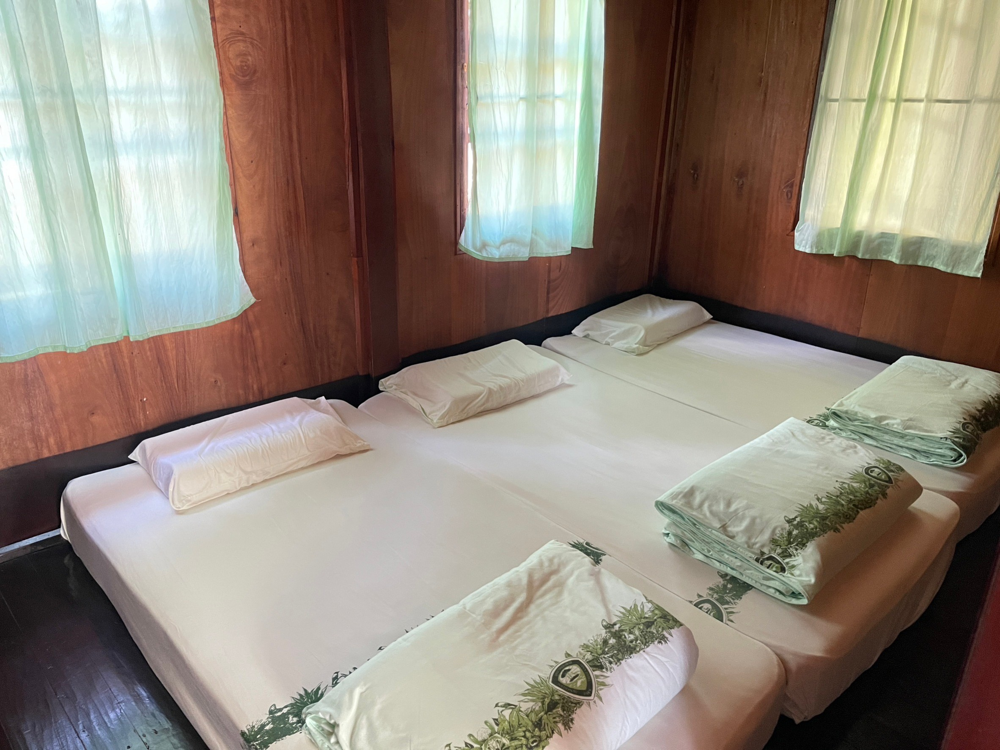
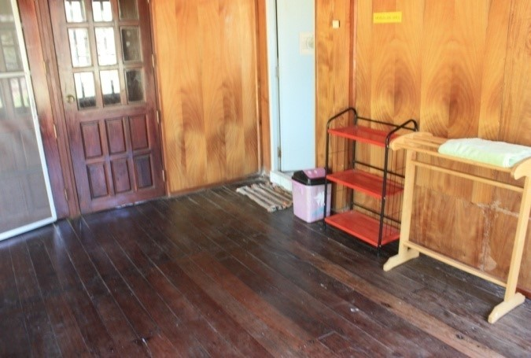
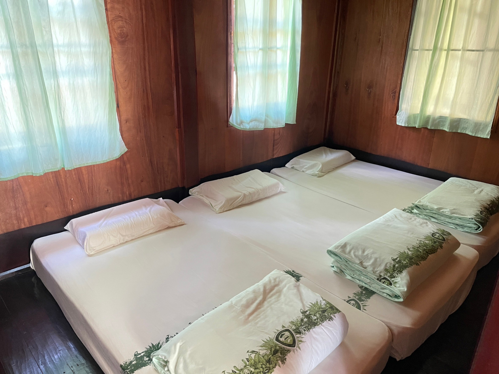
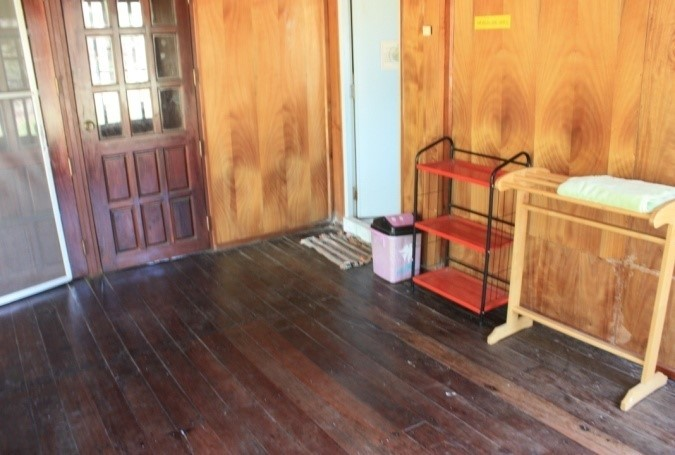

ที่พัก
ภูกระดึง 202 (ศรีฐาน 1)
โซน 2 โซนที่ทำการอุทยานแห่งชาติ (โซนศรีฐาน) อยู่ด้านล่างก่อนขึ้นภูกระดึง บริการบ้านพัก ห้องประชุม
สิ่งอำนวยความสะดวก เครื่องนอน 6 ฟุต, เครื่องปรับอากาศ, พัดลม, โทรทัศน์, ตู้เย็น, กระติกน้ำร้อน, เครื่องทำน้ำอุ่น, ผ้าเช็ดตัว
(บ้านพักอยู่ด้านล่างก่อนขึ้นภูกระดึง)
ประเภทห้อง เตียงเดี่ยว
จำนวนคน 4
จำนวนห้องนอน 1
จำนวนห้องน้ำ 1
ภูกระดึง 111/2 (หยาดน้ำค้าง)
โซน 1 โซนหน่วยพิทักษ์ฯ วังกวาง (โซนวังกวาง) อยู่บนยอดภูกระดึง บ้านพัก เต็นท์ ลานกางเต็นท์
สิ่งอำนวยความสะดวก เครื่องนอน 3.5 ฟุต, ห้องน้ำ-สุขารวม
ประเภทห้อง เตียงเดี่ยว
จำนวนคน 10
จำนวนห้องนอน 1
จำนวนห้องน้ำ 1
ภูกระดึง 117 (เอพริล 1)
โซน 1 โซนหน่วยพิทักษ์ฯ วังกวาง (โซนวังกวาง) อยู่บนยอดภูกระดึง บ้านพัก เต็นท์ ลานกางเต็นท์
ระยะห่างที่ทำการ (kg)
สิ่งอำนวยความสะดวก มีเครื่องนอน, เครื่องทำน้ำอุ่น
ประเภทห้อง เตียงเดี่ยว
จำนวนคน 4
จำนวนห้องนอน 2
จำนวนห้องน้ำ 2
 



ภูกระดึง 107 (ทรงบาดาล)
โซน 1 โซนหน่วยพิทักษ์ฯ วังกวาง (โซนวังกวาง) อยู่บนยอดภูกระดึง บ้านพัก เต็นท์ ลานกางเต็นท์
ระยะห่างที่ทำการ (kg)
สิ่งอำนวยความสะดวก เครื่องนอน 3.5 ฟุต, เครื่องทำน้ำอุ่น, ผ้าเช็ดตัว
ประเภทห้อง เตียงเดี่ยว
จำนวนคน 5
จำนวนห้องนอน 2
จำนวนห้องน้ำ 1
ลานวังกวาง (พื้นที่กางเต็นท์)
โซนหน่วยพิทักษ์ฯ วังกวาง อยู่ด้านบนยอดภูกระดึง เป็นการจองพื้นที่สำหรับกางเต็นท์ ผู้ใช้บริการต้องนำเต็นท์ไปเอง ต้องจองพื้นที่ให้เหมาะสมกับขนาดเต็นท์ ทำการจองได้ครั้งละ 5 คน ต่อ 1 การคลิ๊กค้นหา
จำนวนคน 1